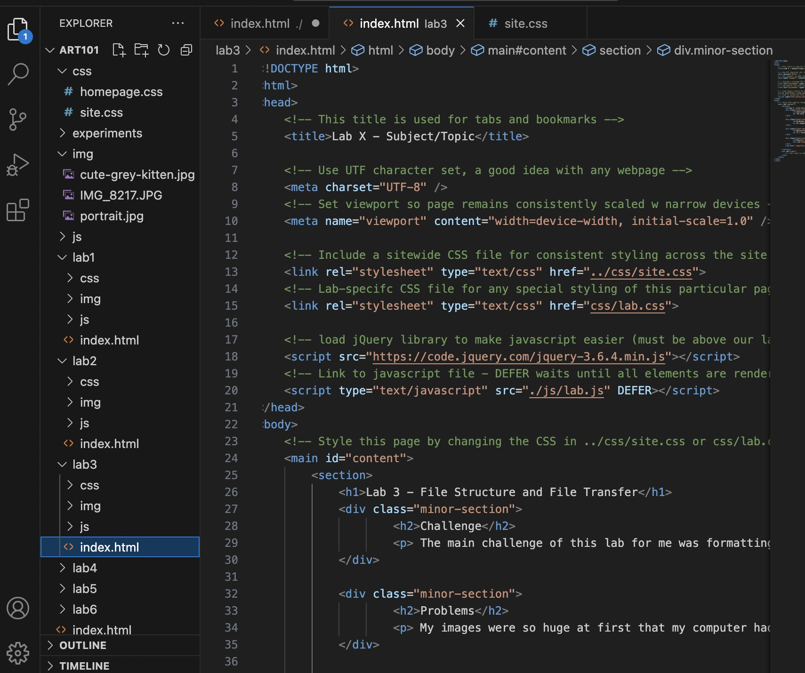
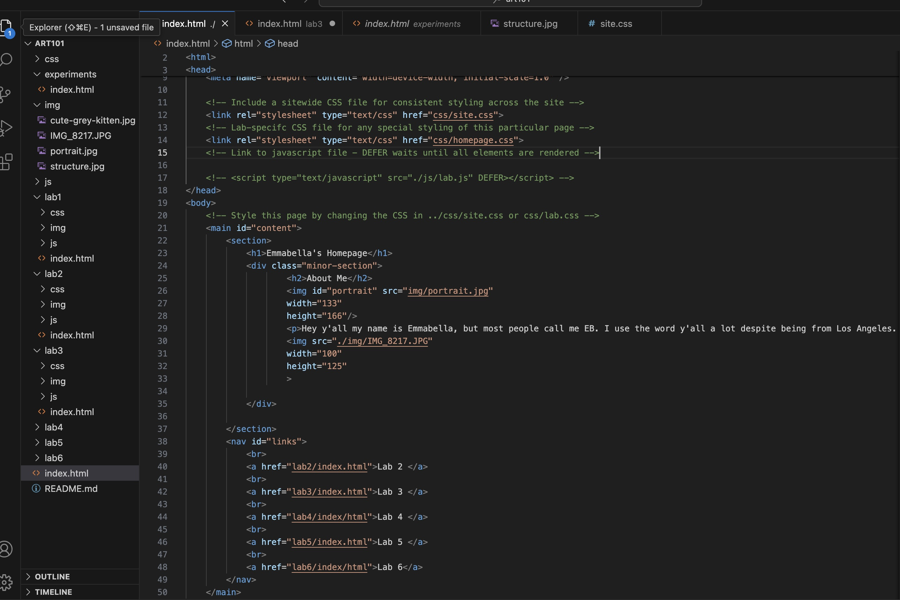
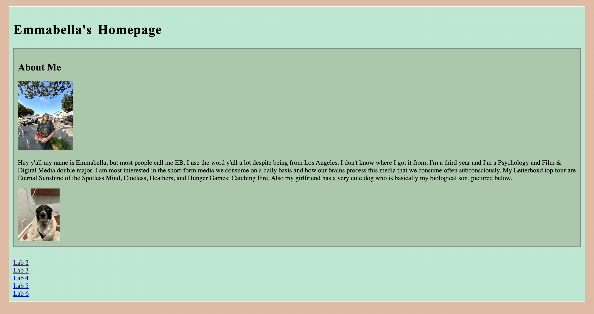

Lab 3 - File Structure and File Transfer
Challenge
The main challenge of this lab for me was formatting the images. It was also a bit difficult just now catching up in lecture. I feel like everything finally clicked, but a bit late.
Problems
My images were so huge at first that my computer had a hard time loading the HTML on my browser, which made troubleshooting difficult. Once I got the first image resized however, the rest were relatively simple.
Reflection
If I were to do this assignment again, I would find a partner earlier so we could collaborate more. My partner was a helpful resource while working on this lab, especially since it was a bit more independent than previous labs, but in the future I think programming side-by-side would help my troubleshooting process.
Results
File Structure
Homepage Code
Web Homepage